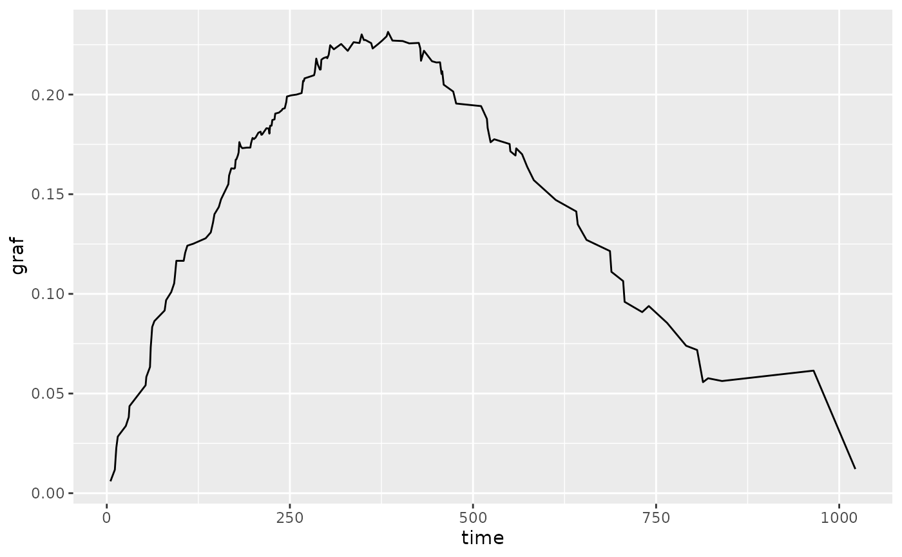

Methods to plot prediction error curves (pecs) for either a PredictionSurv object or a list of trained LearnerSurvs.
Usage
pecs(x, measure = c("graf", "logloss"), times, n, eps = NULL, ...)
# S3 method for class 'list'
pecs(
x,
measure = c("graf", "logloss"),
times,
n,
eps = 0.001,
task = NULL,
row_ids = NULL,
newdata = NULL,
train_task = NULL,
train_set = NULL,
...
)
# S3 method for class 'PredictionSurv'
pecs(
x,
measure = c("graf", "logloss"),
times,
n,
eps = 0.001,
train_task = NULL,
train_set = NULL,
...
)Arguments
- x
(PredictionSurv or
listof LearnerSurvs)- measure
(
character(1))
Either"graf"for MeasureSurvGraf, or"logloss"for MeasureSurvIntLogloss- times
(
numeric())
If provided then either a vector of time-points to evaluatemeasureor a range of time-points.- n
(
integer())
Iftimesis missing or given as a range, thennprovide number of time-points to evaluatemeasureover.- eps
(
numeric())
Small error value to prevent errors resulting from a log(0) or 1/0 calculation. Default value is1e-3.- ...
Additional arguments.
- task
(TaskSurv)
- row_ids
(
integer())
Passed toLearner$predict.- newdata
(
data.frame())
If not missingLearner$predict_newdatais called instead ofLearner$predict.- train_task
(TaskSurv)
If not NULL then passed to measures for computing estimate of censoring distribution on training data.- train_set
(
numeric())
If not NULL then passed to measures for computing estimate of censoring distribution on training data.
Details
If times and n are missing then measure is evaluated over all observed time-points
from the PredictionSurv or TaskSurv object. If a range is provided for times without n,
then all time-points between the range are returned.
Examples
# Prediction Error Curves for prediction object
task = tsk("lung")
learner = lrn("surv.coxph")
p = learner$train(task)$predict(task)
pecs(p)

pecs(p, measure = "logloss", times = seq(0, 1000, 50)) +
ggplot2::geom_point() +
ggplot2::labs(title = "Prediction Error Curve for Cox PH", y = "ISLL")
# Access underlying data
x = pecs(p)
x$data
#> graf time
#> 1 0.005965597 5
#> 2 0.011777875 11
#> 3 0.017308494 12
#> 4 0.022732635 13
#> 5 0.028387865 15
#> 6 0.033724684 26
#> 7 0.038193641 30
#> 8 0.043658743 31
#> 9 0.054160771 53
#> 10 0.058343804 54
#> 11 0.063311850 59
#> 12 0.073221507 60
#> 13 0.078154768 61
#> 14 0.083377010 62
#> 15 0.086341782 65
#> 16 0.091665441 79
#> 17 0.096837844 81
#> 18 0.100917337 88
#> 19 0.105251707 92
#> 20 0.108718102 93
#> 21 0.116584223 95
#> 22 0.116571832 105
#> 23 0.120567300 107
#> 24 0.124178468 110
#> 25 0.125137562 118
#> 26 0.127880504 135
#> 27 0.130848774 142
#> 28 0.135722793 145
#> 29 0.139957719 147
#> 30 0.143614013 153
#> 31 0.147434912 156
#> 32 0.152747017 163
#> 33 0.155051862 166
#> 34 0.159399183 167
#> 35 0.162983390 170
#> 36 0.162822988 174
#> 37 0.163140467 175
#> 38 0.167310206 176
#> 39 0.167532878 177
#> 40 0.169494713 179
#> 41 0.170955851 180
#> 42 0.176146575 181
#> 43 0.173973918 183
#> 44 0.173099080 185
#> 45 0.173360562 191
#> 46 0.173399054 196
#> 47 0.175628574 197
#> 48 0.178210168 199
#> 49 0.177666698 201
#> 50 0.178089057 202
#> 51 0.178300397 203
#> 52 0.180854266 207
#> 53 0.181375993 210
#> 54 0.179816851 211
#> 55 0.179909773 212
#> 56 0.183097738 218
#> 57 0.182938630 221
#> 58 0.180403559 222
#> 59 0.184344647 223
#> 60 0.184396754 225
#> 61 0.187223782 226
#> 62 0.187541980 229
#> 63 0.190441374 230
#> 64 0.190934134 235
#> 65 0.192148119 239
#> 66 0.192790444 240
#> 67 0.193130494 243
#> 68 0.196165735 245
#> 69 0.199021699 246
#> 70 0.199610602 252
#> 71 0.199987150 259
#> 72 0.200736087 266
#> 73 0.203279800 267
#> 74 0.206849306 268
#> 75 0.206716106 269
#> 76 0.208118461 270
#> 77 0.208830613 276
#> 78 0.209698265 283
#> 79 0.211243952 284
#> 80 0.214592507 285
#> 81 0.218048191 286
#> 82 0.215115727 288
#> 83 0.212527247 291
#> 84 0.212569526 292
#> 85 0.217481365 293
#> 86 0.218285174 296
#> 87 0.218821232 300
#> 88 0.218209364 301
#> 89 0.219958146 303
#> 90 0.224739710 305
#> 91 0.222702250 310
#> 92 0.225360561 320
#> 93 0.221928675 329
#> 94 0.223616073 332
#> 95 0.226265389 337
#> 96 0.225847597 345
#> 97 0.230169743 348
#> 98 0.227346915 351
#> 99 0.227388613 353
#> 100 0.225801318 361
#> 101 0.223107291 363
#> 102 0.225488102 371
#> 103 0.227083407 376
#> 104 0.229191359 382
#> 105 0.231446752 384
#> 106 0.227079908 390
#> 107 0.226841597 404
#> 108 0.225665252 413
#> 109 0.225898434 426
#> 110 0.223176527 428
#> 111 0.216946314 429
#> 112 0.221986574 433
#> 113 0.216712476 444
#> 114 0.216093854 450
#> 115 0.216183049 455
#> 116 0.210347840 457
#> 117 0.211703371 458
#> 118 0.204948234 460
#> 119 0.201506095 473
#> 120 0.195487031 477
#> 121 0.194200715 511
#> 122 0.187763494 519
#> 123 0.183264877 520
#> 124 0.176069288 524
#> 125 0.177566507 529
#> 126 0.175187577 550
#> 127 0.171521867 551
#> 128 0.169415047 558
#> 129 0.173017139 559
#> 130 0.170063899 567
#> 131 0.163753666 574
#> 132 0.157050990 583
#> 133 0.147102496 613
#> 134 0.141336738 641
#> 135 0.134877188 643
#> 136 0.127071056 655
#> 137 0.121469116 687
#> 138 0.111061038 689
#> 139 0.106427023 705
#> 140 0.096009560 707
#> 141 0.090859311 731
#> 142 0.093898062 740
#> 143 0.085431054 765
#> 144 0.073970553 791
#> 145 0.071843354 806
#> 146 0.055707896 814
#> 147 0.057660866 821
#> 148 0.056282150 840
#> 149 0.061488243 965
#> 150 0.012115796 1022
# Prediction Error Curves for fitted learners
learners = lrns(c("surv.kaplan", "surv.coxph"))
lapply(learners, function(x) x$train(task))
#> $surv.kaplan
#>
#> ── <LearnerSurvKaplan> (surv.kaplan): Kaplan-Meier Estimator ───────────────────
#> • Model: list
#> • Parameters: list()
#> • Packages: mlr3, mlr3proba, survival, and distr6
#> • Predict Types: [crank] and distr
#> • Feature Types: logical, integer, numeric, character, factor, and ordered
#> • Encapsulation: none (fallback: -)
#> • Properties: importance, missings, selected_features, and weights
#> • Other settings: use_weights = 'use'
#>
#> $surv.coxph
#>
#> ── <LearnerSurvCoxPH> (surv.coxph): Cox Proportional Hazards ───────────────────
#> • Model: coxph
#> • Parameters: list()
#> • Packages: mlr3, mlr3proba, survival, and distr6
#> • Predict Types: [crank], distr, and lp
#> • Feature Types: logical, integer, numeric, and factor
#> • Encapsulation: none (fallback: -)
#> • Properties: weights
#> • Other settings: use_weights = 'use'
#>
pecs(learners, task = task, measure = "logloss", times = c(0, 1000), n = 100) +
ggplot2::labs(y = "ISLL")
pecs(learners, task = task, measure = "graf", times = c(0, 1000), n = 100) +
ggplot2::labs(y = "ISBS")